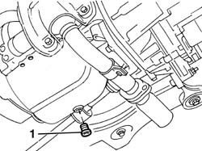
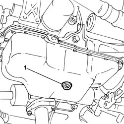
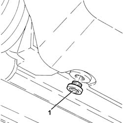
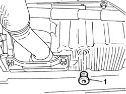
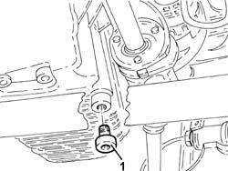

1020A30 engine oil drain plug - replace
- Path
- Procedures > 10 ENGINE > 1020 CRANKCASE SUMP AND COVERS > 1020A crank case oil sump > 1020A30 engine oil drain plug - replace
- Kind
- repair procedure (removal / refitting; the operation number is the code)
- Applies to
- all engines; all production periods
- Interactive page
- https://sloeber94.github.io/elrnDB-fDbl/en/#/2584172
Applies to: all engines; all production periods
 Removing
Removing
 Refitting
RefittingPosition the vehicle on a lift.
Raise the lift.
7055B54 under-engine guard - r r
1. Undo the plug and drain the engine oil into a suitable container.

Applies to: all engines; all production periods
Removing
RefittingPlace the car on the ramp.
7055B54 under-engine guard - r r
1. Undo the engine oil drain plug and drain the oil.

Applies to: all engines; all production periods
Removing
RefittingPosition the car on the ramp.
Proceed with removal 7055B54 under-engine guard - r r
1. Undo the engine oil drain plug and drain the oil into a suitable container.

Applies to: all engines; all production periods
Removing
RefittingPlace the car on a ramp.
7055B54 under-engine guard - r r
Position a suitable container for collecting the oil under the oil sump.
1. Undo the drain plug and collect the oil in the container.

Applies to: all engines; all production periods
Removing
RefittingPosition the vehicle on the ramp.
Proceed with the removal 7055B54 under-engine guard - r r .
1. Undo the engine oil drain plug and drain the oil.

Applies to: all engines; all production periods
Refitting
RemovingTighten the engine oil plug to the recommended torque.
 | Fastening | Component | Ø | Value (daNm) |
|---|---|---|---|---|
- | Plug | ENGINE OIL DRAIN PLUG | - | 5 |
Lower the lift.
0010T11 engine oil check level and top up
7055B54 under-engine guard - r r
Remove the car from the lift.
Applies to: all engines; all production periods
Refitting
RemovingFit a new engine oil drain plug complete with seal and tighten it to the recommended torque.
| Fastening | Component | Ø | Value (daNm) |
|---|---|---|---|---|
- | Plug | ENGINE OIL DRAIN PLUG | M22 | 5 |
7055B54 under-engine guard - r r
Remove the car from the ramps.
Applies to: all engines; all production periods
Refitting
RemovingTighten the new engine oil drain plug to the recommended torque.
| Fastening | Component | Ø | Value (daNm) |
|---|---|---|---|---|
- | - | ENGINE OIL DRAIN PLUG | M14 | (Crankcase sump side) 1.8 ÷ 2.2 |
Refill the engine oil lubrication system 0010T11 engine oil check level and top up .
Proceed with refitting 7055B54 under-engine guard - r r
Remove the car from the ramps.
Applies to: all engines; all production periods
Refitting
RemovingFit the drain plug in the threaded seat in the sump and tighten it to torque.
| Fastening | Component | Ø | Value (daNm) |
|---|---|---|---|---|
- | Plug | ENGINE OIL DRAIN PLUG | M18 x 1.5 | 2 |
0010T11 engine oil check level and top up
7055B54 under-engine guard - r r
Remove the vehicle from the ramp.
Applies to: all engines; all production periods
Refitting
RemovingFit a new engine oil drain plug complete with seal and tighten it to the recommended torque.
| Fastening | Component | Ø | Value (daNm) |
|---|---|---|---|---|
- | - | ENGINE OIL DRAIN PLUG | M18 | (Crankcase sump side) 1.8 ÷ 2.2 |
Proceed with the refitting 7055B54 under-engine guard - r r .
Refill the engine oil lubrication system 0010T12 engine oil and filter replace .
Remove the car from the ramp.
Topics linked from this page (4)
- 0010T10 change engine oil
- 0010T11 engine oil check level and top up
- 0010T12 engine oil and filter replace
- 7055B54 under-engine guard - r r
Topics that link to this page (6)
- 1020A20 crank case oil sump - r + r clean seals for sealant application
- 1020D14 front crank shaft oil seal cover - r + r and replace seals for versions with oil pump on crank shaft, timing side
- 1020D16 front crankshaft oil seal cover - r+r and replace gaskets for versions with airconditioner
- 1028H20 piston with connecting rod - r r
- 1028H21 piston with connecting rod - r r
- 1084B26 emgine oil intake duct - r r